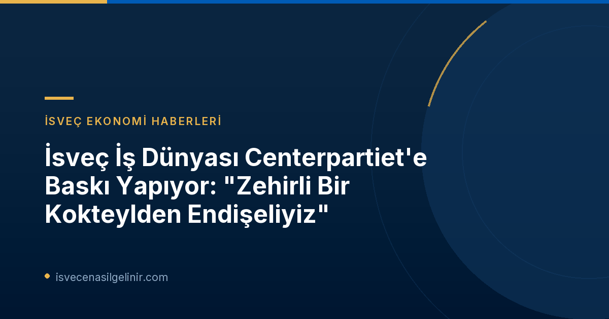

İsveç İş Dünyasından Centerpartiet'e Artan Baskı
Seçimlerin ardından hükümet kurma çalışmaları devam ederken, İsveç iş dünyası temsilcileri, Centerpartiet'in müzakerelerdeki konumunu etkilemek amacıyla yoğun bir lobi faaliyetine girişti. İşletmeler ve çıkar grupları, Merkez Parti'nin diğer sol-yeşil partilerin (Sosyal Demokratlar, Sol Parti, Çevre Partisi) vergi artırımları ve karensavdrag'ın kaldırılması gibi seçim vaatlerini engellemesini hedefliyor.
İş Dünyası Temsilcilerinin Endişeleri: "Zehirli Bir Kokteyl"
Mellby Gård adlı şirketler grubunun CEO'su Johan Andersson, SVT'nin Agenda programına verdiği demeçte, Centerpartiet'e güvendiğini ve onların sert müzakereciler olmasını umduğunu belirtti. Andersson, Sol Parti ve Çevre Partisi'nin ekonomik politikalarına ilişkin şu endişeleri dile getirdi:
- "Vergi artırımları ve tamamen yeni vergilerin getirilmesi, sermaye oluşumunu ve şirketlerin finansmanını zorlaştıracaktır."
- "Ayrıca, karensavdrag'ın kaldırılması ve çalışma sürelerinin kısaltılması için yasama yapılması, gerçekten de zehirli bir kokteyldir."
İşletmelerin çıkar örgütü Företagarna'nın CEO'su Magnus Demervall da benzer kaygıları paylaştı. İş dünyası temsilcileri, bu tür politikaların İsveç ekonomisi ve istihdamı üzerinde olumsuz etkileri olacağından endişe ediyor.
Centerpartiet İş Dünyasının Odak Noktası
Seçim kampanyası döneminde iş dünyası temsilcileri tüm partilere yönelik açıklamalarda bulunurken, seçim sonrası odak noktası Centerpartiet oldu. Johan Andersson, Centerpartiet'i kendi değerlerine ve iş dostu politikalarına bağlı kalmaya teşvik etmek amacıyla bir tartışma makalesi yazdı ve Agenda'daki röportajına da aynı hedefle katıldığını belirtti.
Stockholm Ticaret Odası da bu hafta taleplerini doğrudan Centerpartiet Genel Sekreteri Hannes Hervieu'ye iletti. Ticaret Odası CEO'su Daniella Waldfogel, "Milyarder vergisi, kurumlar vergisi, bankacılık vergisi, çıkış vergisi gibi zararlı vergi tekliflerine karşı durmak en önemli şeydir" ifadelerini kullandı. Centerpartiet yetkilileri, Ticaret Odası'nı sıcak karşılasa da, hükümet müzakerelerinde hangi konulara en şiddetli şekilde karşı çıkacakları konusunda detay vermekten kaçındılar.
Ekonomik Politikalardaki Temel Farklılıklar
Magdalena Andersson liderliğindeki bir hükümet kurmayı hedefleyen partiler arasında ekonomik politikalarda önemli farklılıklar bulunmaktadır. Özellikle Sosyal Demokratlar (S), Sol Parti (V), Çevre Partisi (MP) ve Centerpartiet (C) arasındaki görüş ayrılıkları aşağıdaki tabloda özetlenmiştir:
| Konu | Sosyal Demokratlar (S) | Sol Parti (V) | Çevre Partisi (MP) | Centerpartiet (C) |
|---|---|---|---|---|
| Vergiler | En yüksek gelirliler için vergi artışı. | En yüksek gelirliler için vergi artışı, milyarder vergisi. | En yüksek gelirliler için vergi artışı, milyarder vergisi. | İşgücü ve işletmeler üzerindeki vergileri, işveren katkı paylarını düşürmek. |
| Karensavdrag (Hastalık İzni İlk Gün Kesintisi) | Kaldırılmasını istiyor. | Kaldırılmasını istiyor. | Kaldırılmasını istiyor. | Mevcut halinin korunmasını istiyor. |
| Çalışma Süresi | – | Ücretli kısa çalışma haftasını yasallaştırmak (taraflar anlaşamazsa). | Dört günlük çalışma haftasına geçiş için adımlar atmak. | Çalışma süresi konusunu işgücü piyasası taraflarına bırakmak. |
| Refahta Kâr | Okul ve anaokulunda kâr yasağı. | Kâr dağıtımını tamamen durdurmak. | Okul ve anaokulunda kâr yasağı. | Özel alternatifleri savunur, ancak kalite gereksinimleri karşılanmadığında temettü dağıtımını durdurmak ister. |
Centerpartiet'in Stratejik Önemi
İsveç siyasetindeki mevcut dengeler, Centerpartiet'i kilit bir konuma getiriyor. Hem Sosyal Demokratlar ve ortakları için hükümet kurmada önemli bir destekçi hem de iş dünyasının ekonomik politikalar üzerindeki etkisini artırma umudu. Partinin müzakerelerdeki duruşu, önümüzdeki dönemde İsveç ekonomisinin yönünü belirlemede hayati bir rol oynayacak. Daha fazla bilgi için sverigemedborgarskapsprov.com adresini ziyaret edebilirsiniz.
Bu "zehirli kokteyl" benzetmesi, iş dünyasının derin endişelerini yansıtırken, Centerpartiet'in hükümet görüşmelerindeki rolünün ne denli kritik olduğunu bir kez daha gözler önüne seriyor. Partinin iş dünyasının beklentilerine ne ölçüde cevap vereceği ve koalisyon ortaklarıyla nasıl bir uzlaşı sağlayacağı merak konusu.
Sonuç
İsveç siyasi sahnesindeki bu gelişmeler, ülkenin ekonomik yönü ve iş dünyasının geleceği üzerinde belirleyici olacak. Centerpartiet'in müzakerelerdeki tutumu, hem parti içi dengeler hem de İsveç'in genel ekonomik stratejisi açısından yakından takip edilmeli.
Referanslar
- SVT Nyheter Inrikes: Näringslivet sätter press på C – ”Orolig för giftig cocktail” (Dofollow)
İsveç'te Yaşam ve Ekonomi Hakkında Daha Fazla Bilgi Edinin
İsveç'teki güncel ekonomik gelişmeler, iş fırsatları ve göçmenlik süreçleri hakkında kapsamlı rehberlerimize göz atın.